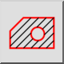
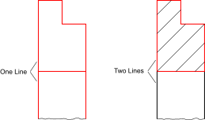
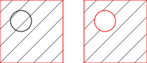

This is an automatic translation.
Šrafura iz odabira…
Toolbar / Icon:


Menu: Crtaj > Šrafura > Šrafura iz odabira…
Shortcut: H, A
Commands: hatch | ha
Description
Ovaj alat ispunjava područje okruženo postojećim entitetima uzorkom šrafure ili punom bojom.
Usage
- Pripremite entitete koji okružuju područje šrafiranja tako da tvore zatvorenu konturu. Kontura mora biti zatvorena tako da je jedan entitet povezan sa sljedećim, kako je prikazano desno u ovom primjeru:

- Odaberite konturu (ili konture) koju želite ispuniti. Imajte na umu da će otoci unutar kontura biti šrafirani ako nisu odabrani:

- Pokrenite alat za šrafuru.
- Prikazuje se dijalog za opcije šrafure. Odaberite uzorak šrafure, faktor mjerila i kut rotacije za uzorak šrafure. Ako objekt želite ispuniti punom bojom umjesto uzorkom, označite potvrdni okvir „Puno ispunjenje”.
- Kliknite „OK” za nastavak šrafiranja. Ovisno o složenosti konture i faktoru mjerila odabranog uzorka, stvaranje šrafure može potrajati neko vrijeme.